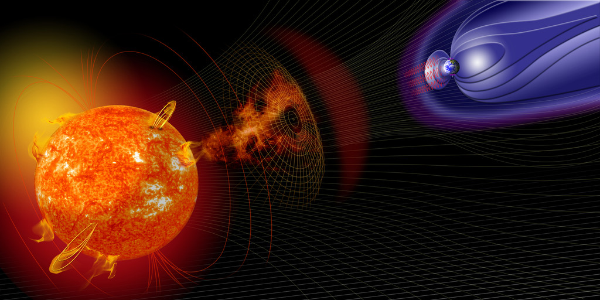
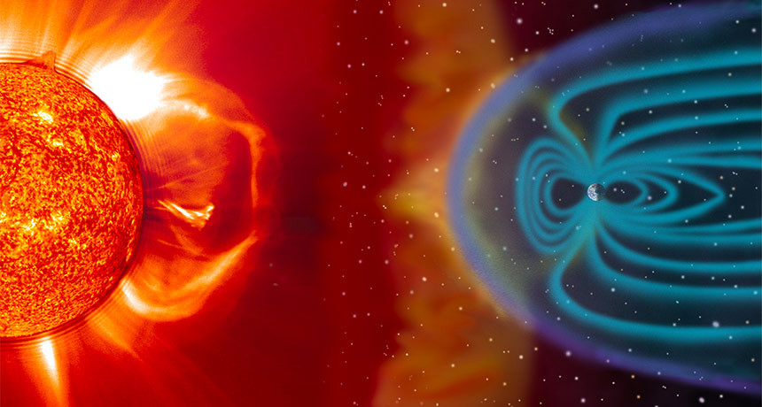

<!DOCTYPE html>
<html lang="es">
<head>
  <meta charset="UTF-8" />
  <meta name="description" content="Ejemplo de HTML5" />
  <meta name="keywords" content="Tormenta, solar, Tierra,geomagnetico" />
  <meta name="viewport" content="width=device-width, initial-scale=1.0">
  <title>Mi primera página web</title>
  <link rel="stylesheet" href="css/misestilos.css">
</head>
</html>
</style>
</head>
<body>
<nav>
<ul>
 
 	<li><a href="E1-UF1302.html" target="_blank"title="enlace a esta página">Incio</a></li>      
 		<li><a href=  "https://www.xataka.com/categoria/seleccion" target="_blank"tittle= "Abre en ventana nueva">Xataca Selección</a></li>  
    <li><a href=  "https://www.xataka.com/categoria/medicina-y-salud" target ="blank"tittle= "Abre en ventana nueva">Ciencia</a></li>
 	</ul>
 	<br/>
 </nav>
 <section>
 	<article>
 	 <header>
 	 	<hgroup>
 	 	<h1><strong>En este mismo momento una tormenta<br/> solar está golpeando la Tierra</strong></h1>
 	 	<figure>
 	 		<figcaption>
 	 			
        
 	 		</figcaption><em>Actualizado 17 Mayo 2019, 00:50<em></
 	 	</figure>

 	 	<p>No sé si lo habéis notado, pero <strong>justo en este momento una tormenta solar está golpeando la magnetosfera de la Tierra.    </strong>De hecho, estamos en el pico de una perturbación que empezó el 15 y acabará el 17. Según el Centro de Predicción del Clima Espacial (SWPC) de Estados Unidos. ayer día 16 tuvo lugar una tormenta moderada (G2).
 	 		<blockquote><p><q>[...]  Y es que el <strong> viernes 10 de mayo fue un día movido en la superficie del Sol.</strong>Tres eyecciones de masa coronal provocaron una oleada de tormentas solares en
nuestra dirección que recién acaban de llegar a nuestro planeta.”<cite>
Fuente: Centro de Predicción del Clima Espacial (SWPC)</cite>
</q></p></blockquote>
<h2>¿Una secuela del gran apagón?</h2>
<p><strong>¿Qué es una tormenta geomagnética?</strong>  Se trata de una perturbación importante de la
magnetosfera de la Tierra que se produce por el impacto de un viento solar. Este tipo de
fenómenos pueden, si su intensidad es alta, causar problemas serios en los dispositivos electrónicos.</p>

<p><strong>Tic, tac.</strong> Sin embargo, no está de más recordarlo, este tipo de fenómenos existen y pueden
llegar a ser muy peligrosos en un mundo como el nuestro que se sostiene sobre la
tecnología. Hace unos pocos meses, unos investigadores mostraron las cicatrices de una
tormenta que hubiera hecho trizas nuestra sociedad actual. Y no hemos avanzado
demasiado desde 2008, cuando la <a href="
https://www.nap.edu/catalog/12507/severe-space-weather-events-understanding-societal-an
d-economic-impacts-a"target="_blank"title=Abre una ventana nueva> Academia Nacional de Ciencias de Estados Unidos</a> alertó de que un evento geomagnético importante conllevaría una
interrupción sin precedentes en el metabolismo social, político y económico del mundo
<p>Los satélites,<strong> las redes eléctricas y los dispositivos electrónicos se verían muy muy
afectados. Y con ellos, las redes logísticas de alimentación y suministros se vendrían
abajo. Los datos totales, en el mejor de los casos, se estman</strong> entre uno y dos billones
de euros. Sí, no me he equivocado: Billones con 'b'. En el mejor de los casos.</p>

<p>El problema es tan serio que en octubre de 2016, la Casa Blanca emitió una orden ejecutiva
para<strong> preparar a Estados Unidos antes este problema.</strong> Y un par de meses después, la
Comisión Europea decía que debíamos empezar a prepararnos. «Un evento de tal magnitud
podría abrumar la capacidad de respuesta de una sola nación», advertían.</p>
<br />

<hr />
</hgroup>
<header>
	</article>
	<article>
    </header>
    	<hgroup>
    	<h2>Videos relacionados </h2>
    	<h3> Una tormenta solar azota la Tierra
    		</hgroup>
    		<iframe width="560" height="315" src="https://www.youtube.com/embed/Mnq88aWY9Ds" frameborder="0" allow="accelerometer; autoplay; encrypted-media; gyroscope; picture-in-picture" allowfullscreen></iframe>
      </header>
      </article>
      <hr />
      <article>
        <header>
          <h3> Iremos a la luna a quedarnos en 2024</h3>h3>
          <video controls width="320" height="176">
        <source src="video/moontomars.mp4" type="video/mp4">
        <video>
        </section>
